5217 ontspoort bij aanrijding met vrachtwagen
- zondag 07 december 2008 17:21
- Geschreven door Joachim
Vanmorgen omstreeks 9.45 uur vond er een aanrijding plaats tussen metrosneltram 5217 (samen met rijtuigen 5243 en 5222 als wagendienst 563) en een vrachtwagen op de kruising President Rooseveltweg in Rotterdam-Ommoord. De chauffeur van de vrachtwagen kwam vanuit oostelijke richting de kruising oprijden en zag de naderende sneltram via spoor 2 over het hoofd.
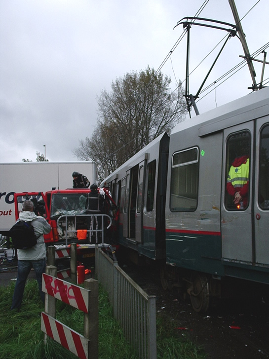
De vrachtwagen schampte eveneens een deel van het rijtuig en kwam in bovenstaande positie tot stilstand.
Tijdens de aanrijding werd de B-bak van rijtuig 5217 door de vrachtwagen uit het spoor geduwd en derailleerde. Bij het deraillement kwam de kop van het rijtuig frontaal in aanrijding met een bovenleidingportaal. Deze belandde op miraculeuze wijze op het dak van het metrorijtuig. De schade aan het rijtuig is groot. De voorkant raakte rechtsvoor beschadigd, evenals de koppeling en de voorruit.
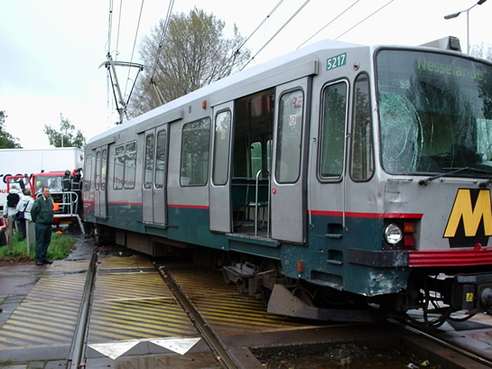
Op deze foto is goed te zien hoe het rijtuig naast het spoor terecht kwam.
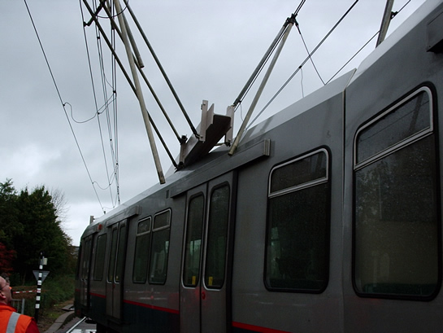
Het bovenleidingportaal lag op het dak van het metrorijtuig.
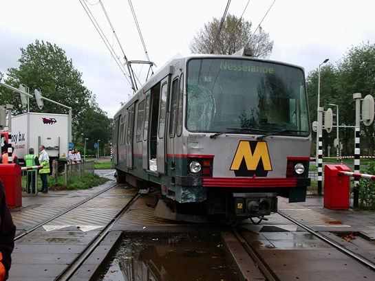
De schade aan het rijtuig is groot. Het draaistel raakte overigens slechts licht beschadigd.
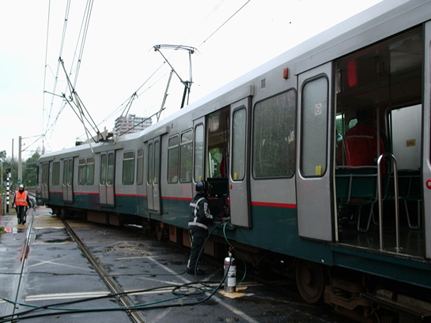
Terwijl de brandweer de chauffeur van de vrachtwagen uit zijn benarde positie bevrijdt, wordt een plan van aanpak uitgedacht.
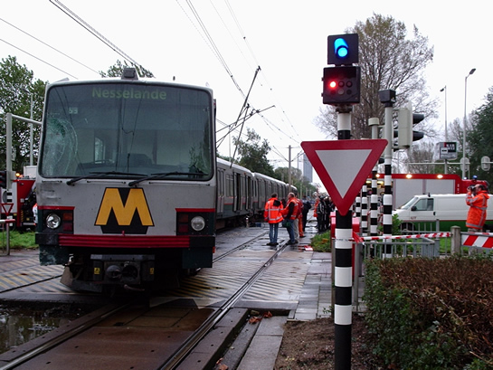
De schade aan het rijtuig en de infrastructuur wordt opgenomen.
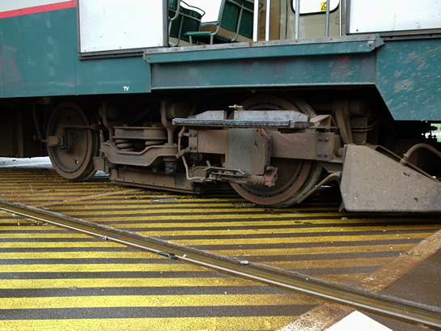
Het eerste draaistel kwam naast het spoor terecht.
Bij de aanrijding raakten 4 reizigers in het metrorijtuig gewond, de metrobestuurder verkeerde in shock, maar bleef ongedeerd. De chauffeur van de vrachtwagen moest uit zijn cabine geknipt worden door de toegesnelde brandweer. Hierbij sneuvelde een deur van het metrorijtuig, evenals een deel van de zijkant. De chauffeur werd tweeënhalf uur na de aanrijding met onbekende verwondingen afgevoerd naar een ziekenhuis.
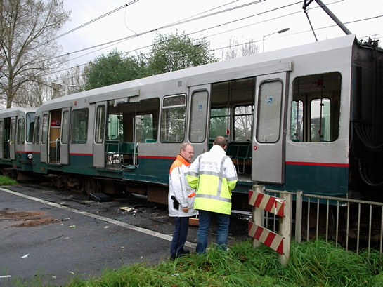
Toen de vrachtwagen verplaatst was, werd het door de brandweer geknipte gat zichtbaar, om de chauffeur op een goede manier uit zijn cabine te halen.
Nadat tegen het middaguur de vrachtwagen door een bergingsbedrijf bij het rijtuig weggesleept was, werd het rijtuig tegen 14.00 uur herspoord. Dit kon pas gebeuren nadat het bovenleidingportaal van het dak van het metrorijtuig was gehaald, evenals de pantograaf, die verstrikt zat in de bovenleiding. Locomotief 6001 sleepte de combinatie 5217-5243-5222 naar remise 's-Gravenweg.
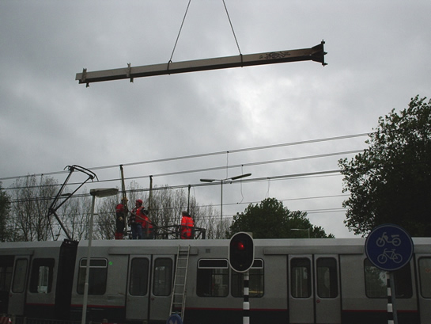
Het bovenleidingportaal wordt van het dak van het sneltramrijtuig gehesen.
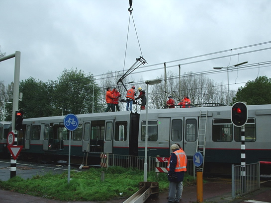
Nadat de pantograaf gedemonteerd is, wordt ook de pantograaf naar straatniveau verhuisd.
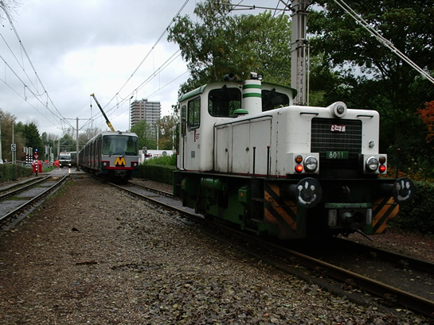
Locomotief 6001, met daarachter de 5222, 5243 en de gehavende 5217. Deze locomotief bracht de combinatie (wagendienst 563) terug naar remise 's-Gravenweg.
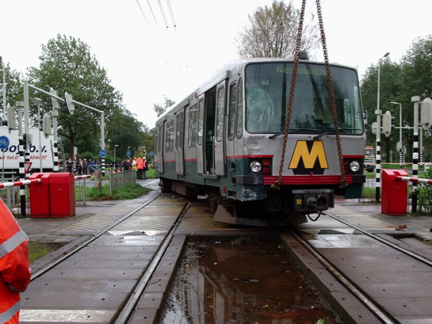
Het bergingsbedrijf herspoort rijtuig 5217. Deze klus werd redelijk snel geklaard.
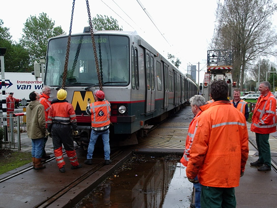
En terug op het eigen spoor. De combinatie metrorijtuigen kan nu teruggebracht worden naar de remise.
Gedurende de stremming, die nog steeds voort duurt, rijden de metro's vanuit Schiedam Centrum richting Ommoord / Nesselande niet verder dan station Prinsenlaan. Tussen de stations Prinsenlaan, De Tochten en Binnenhof v.v. vindt vervangend busvervoer plaats. Tussen de stations De Tochten en Nesselande rijdt een pendelmetro. De vertragingen als gevolg van de stremming zijn aanzienlijk.
Het bovenleidingportaal, dat sneuvelde bij de aanrijding, wordt op dit moment geheel vervangen en een meter verderop geplaatst. Dit omdat het beton, waarin het voormalige bovenleidingportaal stond, ontzet is. Een ploeg van RET Infra / Bovenleiding is bezig met het opnieuw inspannen van de rijdraden. Hierdoor is de President Rooseveltweg nog steeds in één richting afgesloten.
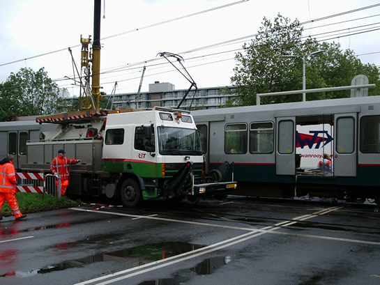
Een van de bovenleidingwagens is nu nog bezig met het inspannen van de rijdraden in het vervangen bovenleidingportaal.
Overigens is de kruising President Rooseveltweg alleen van een AHOB(halve overwegbomen)-installatie voorzien op de kruisingen voor fietsers en voetgangers. Voor het autoverkeer is dit niet aan de orde, daar dit de verkeersdoorstroming teveel belemmert.
De verwachting is dat er vanaf morgenochtend weer gereden kan worden op het tracé tussen de stations Prinsenlaan, Binnenhof en De Tochten.